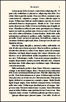

Documentation for novel document class
Documentation version: 1.38.
User Guide
2. Class Options
9. Display, Start Pages;
Chapters; Continued Pages;
Footnotes, Endnotes.
2. Document Class Options
As with other LaTeX classes, novel is called this way:
\documentclass[options]{novel}
As with other document classes, novel chooses a default paper size, and font size, if you do not make the choice. But there, the similarity ends. The default paper size in novel is 5.5" wide by 8.5" high, which is a popular book Trim Size for softcover fiction in the US, and close to the Demy Octavo (C novel) British size. And, the default font size is not an integer point size!
In fact, you cannot set either the paper size or font size in the class options. You set them via other commands, in the Preamble. The commands are explained on other pages of this documentation.
Still, there are a number of class options. As usual, options must be enclosed in braces and be separated by commas.
2.1 draft
The word DRAFT will appear at the upper left of each page.
In draft mode, a little black bar will be placed at the right side of text that didn't quite fit on the line. These locations are reported in the log file as "overfull hbox" warnings. The black bar is called an "overflow rule".

Some packages take note of whether or not the document is in draft mode, and change their behavior accordingly. However, the included microtype package will always be in final mode, and the included hyperref package will always be in draft mode.
In draft mode, PDF/X compliance is turned off, no matter what you specify.
2.2 graytext
The novel document class is intended for black/white book interiors. Normally, any color command, even gray, will be ignored, and the text will be rendered black. This does not affect images.
The graytext option over-rides this restriction, and obeys grayscale color commands from the xcolor package, which is already loaded with the class. Non-grayscale colors will be converted to shades of gray. The color commands are discussed on Page 7.

Your book will not be printed with "gray ink." Instead, anything other than pure black will be emulated by a pattern of black dots. This is known as "halftone." It causes a reduction in resolution, so your gray text will appear somewhat fuzzy. In addition, the halftone operation may extend to nearby text that is not gray. So: Unlike the example shown above, it is a bad idea to mingle gray with the ordinary flow of black text. The most appropriate use of gray text is for special items such as chapter titles.
With this option enabled, you may place light-shaded text (even white) over a darker background, but this is not recommended. Even though the resulting PDF meets standards, it may not produce an acceptable result when printed, particularly if the text is small. It is better to place dark over light.
2.3 shademargins
This option is ignored unless using draft mode. It is not necessary to use the graytext option.
 The
The shademargins option is simple: The margins will have a light gray background. Note that margins refers to the area between the live text area (including head/foot, if any) and the TrimBox, which is the finished size of your book. If you are using \SetMediaSize to request paper larger than your book's Trim Size, the excess area is not considered to be margins; it is discarded paper, so it is not gray.
Some commands (in particular, images) allow their content to overflow the textblock area. With shademargins you can see where such object intrude into the margins.
Sometimes it is hard to see whether a centered object is really centered, because the left-right margins are not the same width. With shademargins you can more easily see centering.
Note that headers and footers are not part of the margins.
2.4 cropmarks
 This option is ignored if the TrimSize is the same as the MediaSize (the usual situation). It works whether or not in draft mode.
This option is ignored if the TrimSize is the same as the MediaSize (the usual situation). It works whether or not in draft mode.
If the PDF Media Size is larger than its finished TrimSize, you can place crop marks (also known as trim marks) to indicate where the paper will be cut. The cropmarks option makes the marks visible. If this option is not used, then no marks are placed, regardless of any other commands.
Note that most print-on-demand book printers do not want crop marks. The process flow is automated, and trim data is read from within the PDF. Crop marks may actually interfere with proper layout, if your PDF is re-formatted to share a large sheet of paper along with other pages. So, do not use cropmarks unless you must. For this reason, the built-in capability for cropmarks is very basic.
 There is only one configurable setting, which may be used in the Preamble:
There is only one configurable setting, which may be used in the Preamble:
\SetCropmarkGap{length}
The cropmark gap is the distance between the Trim Box and where the crop lines begin. The purpose of the gap is so that the marks do not show on the trimmed paper, if the cut is a little bit off. In all cases, the far end of the cropmarks is 0.5in from the Trim Area. The gap is marked G in this diagram. The length must be least 0pt, and is more typically 0.125in or 0.250in. The default is 0.125in.
If your Trim is placed off-center in the Media, then only one pair of cropmarks will be visible.
2.5 cropview
 This option is ignored if the TrimSize is the same as the MediaSize (the usual situation), because it is unnecessary. Also, it is ignored unless using draft mode.
With cropview, there is an internal instruction to PDF viewers, requesting that only the Trim Size be displayed on the screen, rather than the whole Media Size. This is useful during the layout phase, because it is hard to visualize layout when you have a small finished size floating in a much larger paper size. Nothing else is changed.
The accompanying image is the cropview display of the same page that was used to illustrate the cropmarks command. However, you do not need to have cropmarks.
2.6 closecrop
 This option is only effective in draft mode. When used, the layout of your text is unchanged, but the surrounding margins are shrunk so that they just clear the live text area (which includes header and footer, if present). Also, the TrimSize is shrunk accordingly. Left and right margins are the same. The resulting PDF will be easier to read on a handheld device.
This option is only effective in draft mode. When used, the layout of your text is unchanged, but the surrounding margins are shrunk so that they just clear the live text area (which includes header and footer, if present). Also, the TrimSize is shrunk accordingly. Left and right margins are the same. The resulting PDF will be easier to read on a handheld device.
This does not produce an E-book, since the file will be missing some things that an E-book ought to have. The sole purpose of this option is to create a conveniently-sized file that you can carry around while you are thinking about edits and revisions.
2.7 xml
If you request your PDF to comply with PDF/X standards, it will automatically include XMP Metadata that can be seen as document properties in some (mostly professional) PDF reader software. The xml option exports this data with an xml header added, so that it can be independently viewed in software such as a browser.
This option is only for your information; the exported xml file is not necessary. Whether or not you choose this option will not affect the structure or content of your PDF. If you set PDF/X compliance to off, then there will be no exported xml file.
The exported file will be named jobname-XMPasXML.xml, where jobname is the file name of your *.tex document. If you wish to obtain the XMP packet, without the xml header, you can easily do that with a Unicode-compatible text editor. The necessary editing is obvious.
2.8 debug (primarily for developer use)
The novel class has an additional debugging feature. It is primarily intended for developers, but may be helpful to some ordinary users. Do not use this option if your document compiles, because it will clutter the log file with many messages that you do not need.
The use of the debug option is described on documentation page 11.
2.9 unblock (primarily for developer use)
A number of LaTeX packages are known to be incompatible with novel, because "the way those packages do things" conflicts with "the way novel does things." If you attempt to load one of those packages, then the results you get may not be in agreement with the formats and styles described in this documentation, because the other package over-rides some of novel's own macros.
Therefore, at the end of your Preamble, novel reviews the loaded packages, and throws an error message if you included any of them via \usepackage or \RequirePackage. That also applies if you call some other package that chain-loads one of the forbidden packages.
The odds that you will need a forbidden package are small, because they generally pertain to layout for mathematical and academic papers (tables, floats, equations, diagrams, etc.).
If you specify document class option unblock then the list of forbidden packages will be disregarded by novel. Use at your own risk! This option is really intended for the convenience of developers, rather than ordinary users.